Abstract
Forecasting glucose half an hour to two hours ahead is what lets an insulin or food decision be made before a low or a high arrives. We entered the MetaboNet Glucose Prediction Challenge, which pools fourteen type 1 diabetes studies — 155 million five-minute rows from 1,492 subject records — and scores predictions at four horizons on two primary metrics: the share of predictions in zone A of the Diabetes Technology Society (DTS) error grid, and the mean absolute relative difference (MARD).
Three findings organise this report. First, information beats architecture. Conditioning on the insulin and carbohydrate recorded in the next two hours — which the organisers explicitly permit — was worth +4.52 DTS-A points at 30 minutes, more than every other modelling change we tried combined, while three alternative encoders, three training-procedure changes and a sequence decoder for the future block all scored below a plain LSTM on average across five held-out studies. Second, "unseen" means two different things. A 50/50 LSTM–LightGBM blend wins when an entire study is held out; the pure LSTM wins at every horizon on new patients from studies already in training, which is the regime of both leaderboards. Third, offline evaluation can be trusted. Our local scoring reproduced the live leaderboard's per-horizon numbers to its rounding on every entry, and the model is calibrated on its own predictions because L1 loss on the log glucose ratio estimates the conditional median that both MARD and zone A reward.
Our best entry, a six-seed LSTM average, scores 94.07 / 86.43 / 81.37 / 76.91% zone A and 6.70 / 10.21 / 12.36 / 14.31% MARD at 30 / 60 / 90 / 120 minutes. We report every result table, every negative result with its number, the full submission history, and an interactive atlas of raw patient records stratified by study, sensor and insulin pump.
What actually moves accuracy?
Known-future insulin & carbs: +4.52 DTS-A. The next eight tabular ideas combined: +0.78. Seven encoder / training / decoder screens against the plain LSTM: 0 of 7 improved it on average.
Which kind of "unseen"?
LSTM minus LightGBM ranges from +2.09 (PEDAP) to −0.74 (Loop) across held-out studies. On new patients from known studies the pure LSTM beats the blend at every horizon, +0.28 → +1.21.
Can offline scores be trusted?
Offline scoring matched the board to its rounding on all five entries checked. A post-hoc calibration correction loses even in-sample and loses on 9 of 9 held-out studies.
Overview of the pipeline
zone A at 30 min; 6.70% MARD — the strongest horizon
zone A at 120 min; where the remaining deficit sits
DTS-A from post-hoc recalibration, out of study — negative on 9 of 9 studies (RQ3)
offline per-horizon scores match the leaderboard to its rounding
The MetaboNet corpus, and what is actually inside it
MetaboNet (Wolff et al., Journal of Diabetes Science and Technology, 2026) harmonises
publicly available type 1 diabetes data sets into one tabular format on a uniform five-minute grid,
requiring both CGM readings and insulin dosing records for inclusion. The full resource covers 3,135
subjects and 1,228 patient-years. The challenge distributes a train/test split of it as two parquet files
with a shared 37-column schema: who and when (id, source_file, date),
the sensor (CGM, mg/dL), treatment (basal, bolus,
insulin, carbs, meal_label) and context (devices, therapy mode,
demographics, wearables).
Pooling fourteen studies is the corpus's strength and its main difficulty: fourteen sets of devices, recording conventions and missing-data habits sit side by side with no column that reconciles them. Most of the preprocessing in the next section exists because of that. We audited the files before modelling (notebooks 001, 002 and 004), and every number below was measured on the real files.
| Train | Test | |
|---|---|---|
| Rows (five-minute epochs) | 132,772,529 | 22,069,548 |
| Subject records | 1,183 | 309 |
| Subject-days | 437,098 | 76,530 |
| CGM readings (share of rows) | 111,312,646 (83.8%) | 19,560,193 (88.6%) |
| Contributing studies | 14 | 13 |
| Date span | 2011-11-17 → 2027-07-14* | 2012-02-03 → 2024-06-29 |
| Mean / median CGM (mg/dL) | 148.6 / 136.0 | 145.6 / 133.0 |
| Largest study's share of rows | Loop 61% | Loop 63% |
* One training timestamp falls in July 2027 — a corrupt record, filtered. No column shifts between
train and test by a population stability index of 0.10 or more (largest: insulin_delivery_device, 0.099),
so the two splits are drawn from the same pool.
Studies
Eleven of the fourteen training studies produce eligible anchors. The scored live set is a filtered slice of the test file — 279 of 351 subject–study pairs and 9 of 13 studies — and three-quarters of it is a single study, Loop.
| Study | Subjects, train | Subjects, test | Scored subjects | Scored anchors | Share of score |
|---|---|---|---|---|---|
| Loop | 761 | 160 | 159 | 2,035,382 | 76.84% |
| IOBP2 | 299 | 62 | 62 | 146,525 | 5.53% |
| ReplaceBG | 188 | 38 | 35 | 356,829 | 13.47% |
| DCLP3 | 101 | 21 | — | — | 0% |
| Flair | 102 | 21 | — | — | 0% |
| DCLP5 | 90 | 19 | — | — | 0% |
| PEDAP | 59 | 11 | 6 | 63,213 | 2.39% |
| CTR3 | 30 | 5 | 5 | 10,520 | 0.40% |
| AZT1D | 21 | 4 | 4 | 7,750 | 0.29% |
| HUPA-UCM | 20 | 4 | 4 | 8,957 | 0.34% |
| BrisT1D | 18 | 2 | 2 | 19,530 | 0.74% |
| ShanghaiT1DM | 11 | 2 | 2 | 281 | 0.01% |
| T1D-UOM | 13 | 2 | — | — | 0% |
| OhioT1DM | 12 | 0 | — | — | 0% |
| Total (subject–study pairs) | 1,725 | 351 | 279 | 2,648,987 | 100% |
Subjects per split from the atlas stratum inventory (table 63). Scored anchors and share from the live leaderboard template (2,648,987 rows). DCLP3, Flair, DCLP5 and T1D-UOM appear in the test file but contribute no scored row; their subjects carry no food channel, which is the inclusion rule we reconstruct in Preprocessing.
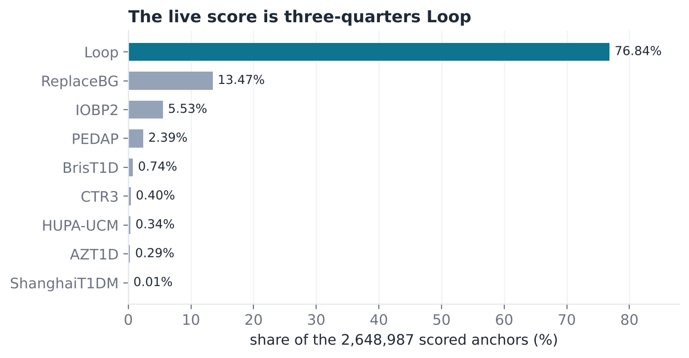
Devices
| Sensor | Train | Test | Present in |
|---|---|---|---|
| Dexcom G6 | 1,157 | 234 | both |
| Dexcom G4 | 226 | 44 | both |
| Dexcom G5 | 115 | 29 | both |
| Guardian 3 | 102 | 21 | both |
| (not recorded) | 81 | 18 | both |
| FreeStyle Libre 2 | 25 | 5 | both |
| Abbott Libre | 2 | 0 | train only |
| Dexcom One | 1 | 0 | train only |
| Medtronic Enlite | 13 | 0 | train only |
| Medtronic Guardian 4 | 3 | 0 | train only |
| Insulin delivery algorithm | Share of rows |
|---|---|
| LoopAlgorithm | 61% |
| Basal-Bolus | 13.6% |
| Control-IQ | 11.1% |
| iLet Bionic Pancreas | 6.2% |
| SmartGuard | 2.4% |
| 780G Advanced HCL | 2.3% |
| Basal-IQ | 0.5% |
Modality by subjects (train / test): automated insulin delivery 1,114 / 277; sensor-augmented pump 221 / 41; multiple daily injections 24 / 7.
TABLEInsulin delivery devices — 27 in train, 18 in test
| Insulin delivery device | Train | Test | Present in |
|---|---|---|---|
| OmniPod | 513 | 104 | both |
| Beta Bionics Gen 4 iLet | 299 | 62 | both |
| t:slim X2 | 281 | 56 | both |
| MiniMed 522/722 | 132 | 25 | both |
| MiniMed 670G | 102 | 21 | both |
| (not recorded) | 71 | 16 | both |
| MiniMed 523/723 | 72 | 16 | both |
| Paradigm Revel 723 | 44 | 11 | both |
| MiniMed 530G 751 | 22 | 7 | both |
| MiniMed 515/715 | 14 | 6 | both |
| Paradigm Revel 523 | 44 | 6 | both |
| MiniMed 530G 551 | 22 | 5 | both |
| Multiple Daily Injections | 15 | 5 | both |
| Roche Accu-Check | 30 | 5 | both |
| t:slim G4 | 18 | 3 | both |
| Medtronic Pump | 8 | 1 | both |
| MiniMed 554/754 | 4 | 1 | both |
| MiniMed 640G | 3 | 1 | both |
| MiniMed 530G | 9 | 0 | train only |
| MiniMed 630G | 3 | 0 | train only |
| MiniMed 780G | 7 | 0 | train only |
| Omnipod 5 | 1 | 0 | train only |
| Omnipod Dash | 2 | 0 | train only |
| Omnipod Eros | 1 | 0 | train only |
| Paradigm 522 | 2 | 0 | train only |
| Paradigm 722 | 2 | 0 | train only |
| Roche Pump | 4 | 0 | train only |
Nine pump models and four sensor models are train-only. No level is test-only, so a model never meets a device at scoring time that it has not seen in training.
Glycemic profile
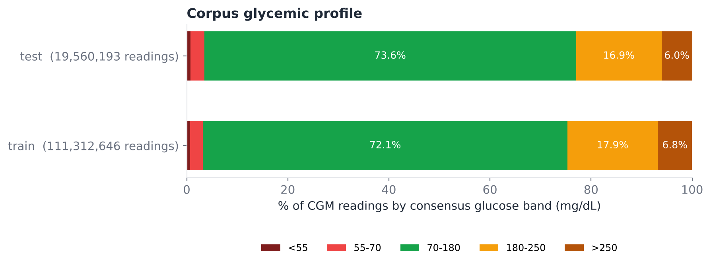
Eight findings from the audit
Severity is "would a competent modeller notice before it damaged their results", not effect size. Click a finding for the measurement behind it.
CRITICALThe subject identifier is not a subject key
id values but 2,076 subject–study pairs: 254 ids are reused
by more than one study (222 in train, 32 in test), one of them by nine studies. Grouping by id
alone merges 584 different people into someone else and can put the same person on both sides of a validation
split. Every grouping, fold and feature in this work is keyed on (source_file, id). The same problem
shows up as 6,277,774 duplicate (id, date) keys (7.46 M surplus rows, 5.6% of train).CRITICALHeight is in feet, not metres
CRITICALAir and skin temperature are Fahrenheit
HIGHThe pump decides whether food data exists
HIGHinsulin is a total, not a third dose type
insulin = basal + bolus to floating-point equality on 98.99% of rows corpus-wide — but CTR3
(0% match) and BrisT1D (8–10%) record only the total. For those cohorts insulin is the only insulin
channel; a model reading basal and bolus alone sees them as receiving no insulin.
Per-cohort counts are in table 68.HIGHMissingness is a property of the study
MEDIUMNo distribution shift overall, but drift inside levels
MEDIUMSeveral cohorts were converted from mmol/L
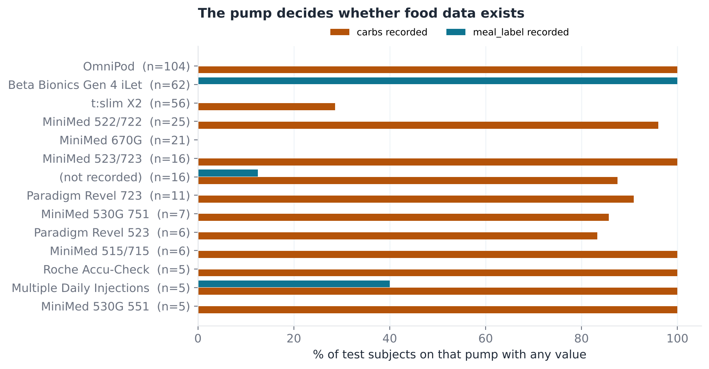
carbs alone is structurally blank for these
patients, which is why the organisers' inclusion rule — and ours — tests for any food channel.Column coverage
TABLEEvery raw column — share of rows filled and of subjects reached, per split
| Column | % rows, train | % rows, test | % subjects, train | % subjects, test | Verdict |
|---|---|---|---|---|---|
is_test | 100.00 | 100.00 | 100.0 | 100.0 | usable |
date | 100.00 | 100.00 | 100.0 | 100.0 | usable |
subject_split_across_traintest | 100.00 | 100.00 | 100.0 | 100.0 | usable |
age | 99.86 | 100.00 | 99.6 | 100.0 | usable |
id | 100.00 | 100.00 | 100.0 | 100.0 | usable |
source_file | 100.00 | 100.00 | 100.0 | 100.0 | usable |
insulin_delivery_modality | 99.12 | 99.18 | 98.8 | 99.4 | usable |
insulin_delivery_algorithm | 97.60 | 97.94 | 98.6 | 98.1 | usable |
insulin | 90.40 | 93.22 | 100.0 | 100.0 | usable |
insulin_delivery_device | 95.21 | 93.10 | 96.3 | 95.5 | usable |
height | 94.05 | 92.61 | 93.6 | 94.8 | usable |
cgm_device | 94.94 | 92.39 | 95.3 | 94.8 | usable |
weight | 94.24 | 92.32 | 94.3 | 94.5 | usable |
age_of_diagnosis | 94.26 | 92.08 | 95.1 | 94.8 | usable |
bolus | 88.53 | 90.78 | 98.5 | 98.4 | usable |
basal | 87.65 | 90.55 | 98.5 | 97.7 | usable |
ethnicity | 93.96 | 90.48 | 94.6 | 93.9 | usable |
insulin_type_basal | 92.70 | 89.01 | 94.3 | 92.9 | usable |
CGM | 83.84 | 88.63 | 100.0 | 100.0 | usable |
insulin_type_bolus | 92.20 | 88.29 | 93.2 | 92.2 | usable |
gender | 85.07 | 82.58 | 71.5 | 72.5 | usable |
carbs | 66.32 | 69.59 | 72.7 | 67.6 | usable |
is_pregnant | 67.35 | 64.19 | 72.7 | 72.8 | usable |
treatment_group | 35.49 | 34.30 | 45.6 | 48.5 | partial (<50% of test subjects) |
calories_burned | 23.35 | 25.20 | 40.2 | 30.4 | partial (<50% of test subjects) |
randomization_date | 22.11 | 22.36 | 38.3 | 39.2 | partial (<50% of test subjects) |
extension_date | 5.72 | 5.96 | 22.6 | 18.1 | partial (<50% of test subjects) |
heartrate | 0.66 | 0.77 | 3.7 | 1.9 | near-empty in test (<5% of subjects) |
steps | 0.61 | 0.72 | 4.8 | 2.6 | near-empty in test (<5% of subjects) |
workout_label | 0.08 | 0.06 | 39.4 | 30.4 | partial (<50% of test subjects) |
meal_label | 0.06 | 0.06 | 27.0 | 21.4 | partial (<50% of test subjects) |
workout_duration | 0.06 | 0.05 | 38.9 | 29.8 | partial (<50% of test subjects) |
misc_notes | 0.03 | 0.03 | 1.4 | 1.0 | near-empty in test (<5% of subjects) |
workout_intensity | 0.00 | 0.00 | 0.8 | 0.0 | EMPTY IN TEST — unusable |
skin_temp | 0.11 | 0.00 | 1.0 | 0.0 | EMPTY IN TEST — unusable |
galvanic_skin_response | 0.11 | 0.00 | 1.0 | 0.0 | EMPTY IN TEST — unusable |
air_temp | 0.06 | 0.00 | 0.5 | 0.0 | EMPTY IN TEST — unusable |
From table 61. Wearable channels (heartrate, steps) exist in four small
studies, about 105,000 anchors or 1.5% of the 7.09 M training anchors; no study large enough to hold out has them.
What the corpus does not contain
Glucose and insulin
- No sensor session boundaries, warm-up or calibration events, no reference fingerstick, no trend arrow, no per-reading quality flag.
- No bolus type: normal, extended, dual-wave and automated corrections are one number.
- No programmed basal profile, temporary basal or suspend events; no insulin-on-board as the pump computed it.
- No bolus-calculator settings, no auto-mode entry or exit, no site changes, no non-insulin medication.
Food and context
- Nothing beyond grams of carbohydrate: no fat, protein, fibre or glycemic index; no announced-vs-retrospective flag.
- No time zone or daylight-saving information — timestamps are naive.
- No sleep, illness, stress, menstrual cycle or alcohol; no usable exercise record in the test split.
- No per-row units declaration — units have to be inferred, per cohort.
These absences bound what any model trained on this corpus can represent. Unannounced meals and hand-judged doses in the manual-dosing cohorts (ReplaceBG, CTR3) are never recorded — we show in Ablations that this, not model capacity, limits accuracy there.
From 155 million rows to one training anchor
Nine steps, each a response to something measured in the audit. None of them is visible from a row count, and each would silently corrupt a model that skipped it.
Identify the patient
A patient is the pair (source_file, id).
1,492 id values describe 2,076 patients; 254 ids are shared across studies.
Put everything on one clock
t = epoch(date) ÷ 300. Every
timestamp in both files lands exactly on a five-minute boundary — zero off-grid rows — so a missing hour is a
jump of 12, and "30 minutes ago" is index − 6.
Resolve the duplicates
Among rows sharing a patient and an index, keep the most complete; break ties with a hash of the row, never by file position (which changes with thread count). Train 132.8 M → 115.2 M unique moments, test 22.1 M → 18.7 M (after also dropping never-scored subjects).
Windows in time, not rows
Every lag and rolling statistic is a range over the time index. With 11.4% of readings missing, mostly in long gaps, "six rows above" can mean thirty minutes or three hours; a time window returns empty instead.
Compute wide, store narrow
A 24-hour statistic must be computed at all 115 M moments but is read at about 3 M. Filtering in the same query cut storage from 11 GB (which exceeded the cluster quota) to 1.5 GB with identical values.
Read the contract from the file
The template fixes the exact rows and their order; scoring is positional. Submissions copy the template's three key columns untouched.
Rebuild the selection rule
Training anchors pass the organisers' own filter chain (below), so the training distribution matches what is scored.
Build one feature row
One code path builds features for training and scoring anchors, so a feature cannot mean one thing when fitted and another when used.
Validate on unseen patients
Folds split by patient, never by row; a whole-study hold-out is the harder second test. See Method.
Cleaning policy
Applied
- CGM interpolation only across gaps ≤ 15 min, into existing rows, always flagged (
cgm_imputed). - CGM clipped to [40, 400] mg/dL — a rail reading is censored, not wrong.
- Implausible doses nulled, not clipped (e.g. a 300 U bolus).
- Missingness by (cohort × column): a blank bolus is a structural zero where the cohort records boluses and "not collected" where it never does.
- Units decided once: feet → cm, pounds → kg, °F → °C (affine).
Never done
- No test row is dropped or reordered — every source
(id, date)survives (asserted). - No value is changed except through an entry in a printed policy table with the measurement that justified it.
- Forward-filled CGM is used for inputs only; targets are masked to real readings.
subject_split_across_traintestis analysis metadata and never a model feature.
Reconstructing the scored set
The organisers describe the live set as "24 h history, CGM gaps under 30 min, insulin gaps under
2 h, mandatory carbohydrate information, 15-minute stride". The carbohydrate clause cannot be literal — iLet
patients record no carbohydrate and are scored. Testing any food channel (carbs or meal label) against
template membership predicts inclusion exactly, study by study. Reproducing the chain on test.parquet
lands on the official count to the row:
| Step | Anchors |
|---|---|
| All four targets present | 18,732,751 |
| 24 h of lookback (position ≥ 287) | −77,409 |
| Anchor CGM not missing | −235,730 |
| No CGM gap of ≥ 6 rows in the window | −4,511,858 |
| No insulin zero/missing run of ≥ 25 rows | −3,195,115 |
| At least one carbohydrate or meal record in the window | −2,765,960 |
| Survivors | 7,946,679 |
| Every third survivor, counted from the end of each subject | 2,648,987 |
| Distinct (source_file, id) groups | 279 |
Targets are positional (row offsets 6/12/18/24 inside each subject), not clock-shifted. Striding forwards gives 2,648,905 and striding on raw row position 2,649,624; only counting backwards reproduces the template. Reconstructing anchors from the prose alone matches the counts but only 31% of the actual rows, so every submission is built from the official template.
Four horizons, two primary metrics, two leaderboards
Given the past, predict four points
At each anchor, use everything recorded up to that moment — plus insulin and carbohydrate already scheduled for the next two hours — and predict CGM at t + 30, 60, 90 and 120 min. 2,648,987 anchors × 4 = 10.6 M numbers in one file in one fixed row order.
DTS error grid, zone A
Share of predictions in the "no clinical risk" zone. Ranked on the average over the four horizons; RMSE breaks ties.
MARD
mean(|pred − true| / true) × 100. A 20 mg/dL miss at 70 counts three times as much as at 250.
Also averaged over horizons; RMSE breaks ties.
Zone A, exactly
For reference value y and prediction ŷ, a pair is in zone A when low(y) ≤ ŷ ≤ up(y), with the piecewise-linear bounds used verbatim in all our scoring:
up(y) = 60 if y ≤ 50
= (540 / 450) · (y − 50) + 60 otherwise
low(y) = 0 if y ≤ 62.5
= (430 / 537.5) · (y − 62.5) + 50 otherwiseAbove about 62.5 mg/dL this is a band of roughly ±20% around the truth — a multiplicative
band. In log space it is approximately [−0.223, +0.182], which is why our models predict the log ratio
log(CGMt+h) − log(CGMt) and are trained with L1 loss (Method).
The submission contract
| Column | Type | Meaning |
|---|---|---|
id | string | subject id (string, not int) |
source_file | string | study |
date | timestamp[ns] | the anchor |
pred_30 … pred_120 | double | glucose in mg/dL at t + h |
| 1 | Row count equals the template's |
| 2 | All seven columns present |
| 3 | Key columns equal to the template element-wise |
| 4 | Rows in the same order — compared by position, never joined |
| 5 | At least one prediction column fully populated |
| 6 | All-or-nothing per column: a partly filled column is rejected |
large_string; the organisers' template uses string, and pandas reads both back as the same
dtype. Our writer now copies the template's Arrow arrays verbatim, and our validator checks Arrow storage type
(19 checks in all). Row order is also part of the contract: a mis-ordered file of a good model measured 91.68 → 39.84.Two leaderboards with opposite temptations
Public test set — 2,648,987 anchors, 279 patients, 9 studies
The correct answers ship with the toolkit; feedback in seconds; one submission per minute. The organisers note that leakage is not controlled here. Anything tuned to the published answers buys a sandbox score and transfers nothing.
Held-out set — 2,228 anchors
Answers kept on the server; no feedback until the competition closes; three entries marked for final
evaluation; deadline 5 October 2026. The public holdout file blanks the future CGM with −1.0 sentinels.
The floor any model must clear
| Predictor | RMSE | MARD (%) | DTS-A (%) |
|---|---|---|---|
| Persistence, t + 30 | 25.17 | 13.12 | 79.92 |
| Persistence, t + 60 | 39.98 | 21.31 | 61.34 |
| Persistence, t + 90 | 49.26 | 26.62 | 51.81 |
| Persistence, t + 120 | 55.48 | 30.26 | 46.31 |
| Persistence, all horizons | 43.98 | 22.83 | 59.84 |
| Linear extrapolation of the 30-min slope, undamped | 67.41 | 34.27 | 47.23 |
| … damped × 0.30 | 47.66 | 24.13 | 58.93 |
Glucose is strongly mean-reverting at these horizons: undamped extrapolation is far worse than persistence, and damping helps only at 30 minutes. For scale, the toolkit README's own worked example prints RMSE 53.17 / MARD 33.51 / DTS-A 38.2 at t + 60 — below persistence on every metric.
Two model families, one target, one rule
The target: a log ratio, fitted to its median
Every model predicts rh = log(CGMt+h) − log(CGMt) and is trained
with L1 loss. Two reasons, both measured rather than assumed:
- Predicting the change hands the model persistence for free. Glucose over two hours is strongly mean-reverting, so the current reading is the best single guess; all capacity goes to what happens next.
- L1 estimates the conditional median, and both ranked metrics are median-optimal. MARD is a relative error and zone A is a multiplicative band, so both reward the centre of the log-ratio distribution. Glucose is right-skewed — it can run to 400 but floors near 39 — so the mean sits above the median. On a matched ablation, log-ratio beats raw-level targets and L1 adds a little more; RMSE, a mean-targeting metric, is only a tiebreaker and is deliberately not what is optimised. RQ3 confirms this on the final model.
The prediction submitted is CGMt · exp(r̂h), clipped to [39, 401] mg/dL.
The lever: inputs that are already known
The organisers state that "what-if (conditional) models are welcome" on both leaderboards — models may condition on insulin doses and carbohydrates recorded after the anchor. Those records exist at a large share of scored moments:
| In the window (t, t + 120] | Share of anchors |
|---|---|
| A bolus is recorded | 43.41% |
| Carbohydrate is recorded | 31.58% |
| A bolus in the next 30 min | 15.76% |
| Carbohydrate in the next 30 min | 9.38% |
A CGM-only forecaster cannot see any of this. The caveat we carry: these are doses that were actually given, not a stated plan, so the conditional result answers "what happens given this treatment", and we report a strict past-only ablation beside it.
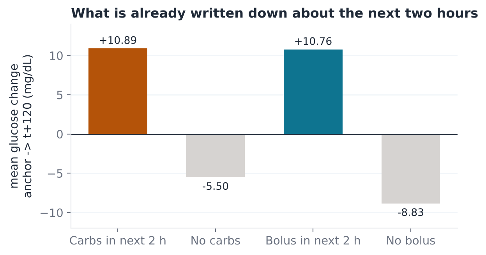
Family A — LightGBM "what-if"
Features (240)
- CGM shape — lag deltas out to 24 h, least-squares slopes over 15 min–6 h, acceleration, rolling mean / sd / min / max / range, z-scores, time in range at 54 / 70 / 180 / 250 over 6 h and 24 h, time since last hypo / hyper, missingness counts.
- Insulin — insulin-on-board as exponential decays (τ = 20, 45, 90, 180, 360 min), two activity curves peaking near 55 and 120 min, rolling sums 30 min–24 h, basal rate, time since and size of last bolus.
- Carbohydrate — carbs-on-board decays (τ = 20, 45, 90 min), rolling sums, time since and size of last entry, meal-label counts.
- Clock and context — time-of-day sine / cosine, weekday; study, sensor, delivery modality and algorithm as categoricals; age, weight, height, BMI, age at diagnosis.
- What-if block — insulin, bolus and carbohydrate summed over the next four 30-minute bins and 2 h totals, plus time-to-next-event and 10-minute future bins. The only features that look past the anchor.
Training
- One booster per horizon × 3 seeds = 12 models; predictions averaged over seeds.
- L1 on the log ratio; 511 leaves, learning rate 0.02, up to 12,000 rounds with early stopping.
- 7.09 M training anchors, subject-disjoint validation (15% of subjects held out, seed 1234).
- About 17 hours on 32 CPU cores for the full four-horizon, three-seed fit.
- No post-hoc calibration in the submitted files: the fitted DTS warp measured −0.1 to −0.4 and is disabled.
- The causal variant (no future inputs, 174 features) is kept as an ablation:
live_causal.
Family B — LSTM forecaster with a known-future block
Architecture
- History encoder: 288 five-minute steps (24 h) × 9 input channels → LSTM, hidden size 192.
- Known-future block: the 24 future steps (120 min) × 4 dose channels plus a validity mask, flattened and passed through an MLP to a 96-dimensional vector.
- Head: concatenate (192 + 96) → 128 → GELU → 4 outputs, one log ratio per horizon.
- No static patient or device features enter the network — a deliberate difference from Family A, and an open lever (Limitations).
Training
- L1 on the log ratio; cosine-annealed learning rate over a 25-epoch budget.
- Early stopping on a subject-disjoint stop split, patience 5; runs stop at epoch 14–22. Checkpoint chosen on stop-split L1.
- Six independent seeds for the final entry; the mean of their predictions is submitted.
- GPU training on a university SLURM cluster. Fold screens train one model per held-out study.
Combining models — with nothing fitted
Seed averaging removes the part of the score that depends on the random initialisation; there is no selection step, so nothing can leak. Blending uses a weight of 0.5, fixed before any blend was scored. A per-horizon weight fitted leave-one-fold-out bought +0.016 DTS-A and was rejected (Ablations).
for each subject s = (source_file, id):
t_idx ← epoch(date) / 300 # integer 5-min clock
rows ← dedupe(s, keep = most complete,
tie = hash(row))
for each anchor a passing the filter chain:
hist ← rows[t_idx(a) − 287 … t_idx(a)] # 24 h
fut ← doses[t_idx(a) + 1 … + 24] # 2 h
target ← log CGM[a + k] − log CGM[a],
k ∈ {6, 12, 18, 24} (rows)
mask ← CGM[a + k] is a real readingfor seed in 0 … 5:
θ_seed ← argmin Σ |f_θ(hist, fut) − target|
(early stop on stop-split L1)
r̂_lstm ← mean_seed f_θseed(hist, fut)
r̂_gbm ← mean_seed LightGBM_seed(features)
r̂ ← r̂_lstm # lstmseed6
or 0.5·r̂_lstm + 0.5·r̂_gbm # blendseed6
pred_h ← clip(CGM_t · exp(r̂_h), 39, 401)
write template keys verbatim ⊕ pred_30 … pred_120Evaluation protocol
Public test set
Fixed by the organisers:
2,648,987 anchors, 279 patients, 9 studies. New patients, known study — the same regime as the annual
set. Scored locally against the toolkit's targets.parquet.
Leave-one-study-out
Built by us. Remove every patient of one study from training, early stopping and normalisation; fit on the rest; score on the removed study. A study qualifies at ≥ 20 subjects and ≥ 50,000 anchors: Loop, ReplaceBG, IOBP2, PEDAP, CTR3. A whole new study — new devices, protocol and population.
Paired subject bootstrap
The patient is the unit of independence. 2,000 resamples of subjects, one shared draw seed (7) for every model so comparisons are paired. "Better" means a 95% interval that excludes zero.
Rules that held for the whole project
Every model, every horizon, both test sets
All tables below are generated from metabonet_results.csv (340 rows, 27 models), written by one scoring function for both test sets so the two sides are directly comparable. Predictions are scored exactly as uploaded, with no clipping. Click a column header to sort; the best value in each column is in bold.
Public test set — 2,648,987 anchors
Highlighted row: our best entry. Persistence is a reference computed separately on 2,648,723 of the
anchors and is excluded from the bold "best" marks. live_lstm through live_lstm_s5 are six
independent LSTM seeds; their mean is live_lstmseed6.
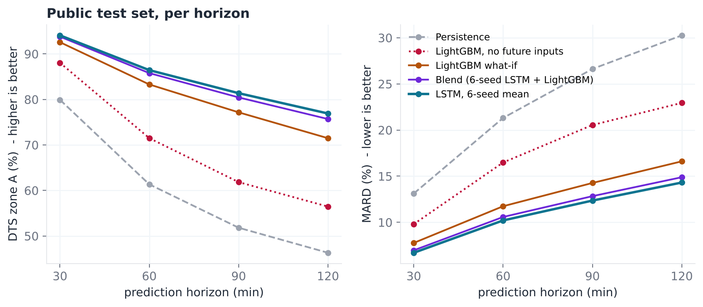
Confirmed by the leaderboard
Five entries were scored by the live leaderboard as well as locally. The board's per-horizon numbers match ours to the board's own rounding every time — the offline numbers on this page are what the board would report.
| Entry | 30 min | 60 min | 90 min | 120 min | |
|---|---|---|---|---|---|
| live_lstmseed6 | board | 94.1 | 86.4 | 81.4 | 76.9 |
| ours | 94.07 | 86.43 | 81.37 | 76.91 | |
| live_blendseed6 | board | 93.8 | 85.8 | 80.4 | 75.7 |
| ours | 93.79 | 85.78 | 80.44 | 75.69 | |
| live_lstmseed (3 seeds) | board | 94.0 | 86.3 | 81.2 | 76.8 |
| ours | 94.03 | 86.31 | 81.22 | 76.77 | |
| live_blendseed | board | 93.8 | 85.7 | 80.4 | 75.6 |
| ours | 93.78 | 85.74 | 80.38 | 75.64 | |
| live_whatif | board | 92.6 | 83.3 | 77.2 | 71.5 |
| ours | 92.57 | 83.29 | 77.16 | 71.48 |
MARD and RMSE agree as well: for live_lstmseed6 the board reports MARD 6.7 / 10.2 / 12.4 / 14.3
and RMSE 13.9 / 21.3 / 25.8 / 29.7. Throughout this page "mean" is the arithmetic mean of the four per-horizon values,
which is how the tracks are ranked. The board's own headline average column uses a different aggregate, so we do not
quote it.
Model arena
Pick any two public-test entries to compare them horizon by horizon.
Green: A is better than B on that metric; red: worse.
Leave-one-study-out — five held-out studies
Each fold trains without one study and scores only that study. Absolute values are not comparable across folds — holding out Loop removes 73% of the training data, holding out CTR3 removes 0.9% — so read model-to-model differences within a fold.
lstm_futseq_s0 finished on IOBP2 and PEDAP after the results file was written; its
four-horizon means there are 79.16 and 70.83 (from 37_xcohort_table.py, included in the cross-cohort
table below and in Figure 10).
| Held-out study | Subjects | FIT rows | Best single model | LSTM (3 seeds) | LightGBM | LSTM − LightGBM | 95% CI |
|---|---|---|---|---|---|---|---|
| PEDAP | 59 | 5,591,896 | lstm_s1 71.72 | 71.48 | 69.35 | +2.09 | [+1.62, +2.64] |
| IOBP2 | 294 | 5,448,701 | lstm_s0 80.80 | 80.51 | 78.97 | +1.83 | [+1.68, +1.97] |
| ReplaceBG | 184 | 4,801,409 | lstm_dz25_s0 71.41 | 71.34 | 70.04 | +1.33 | [+1.17, +1.49] |
| CTR3 | 26 | 5,699,843 | lstm_dz50_s0 61.24 | 60.56 | 60.10 | +1.12 | [+0.46, +1.83] |
| Loop | 749 | 1,474,462 | lightgbm_whatif 73.79 | 72.46 | 73.79 | −0.74 | [−0.97, −0.51] |
"LSTM (3 seeds)" is the average of the three single-seed scores. The gap and interval use seed 0 — the gap for seeds 1 and 2 is +0.74 / −0.50 on CTR3, +1.57 / +1.23 on IOBP2, −0.93 / −2.32 on Loop, +2.41 / +1.99 on PEDAP and +1.25 / +1.31 on ReplaceBG. Blends are excluded from "best single model".
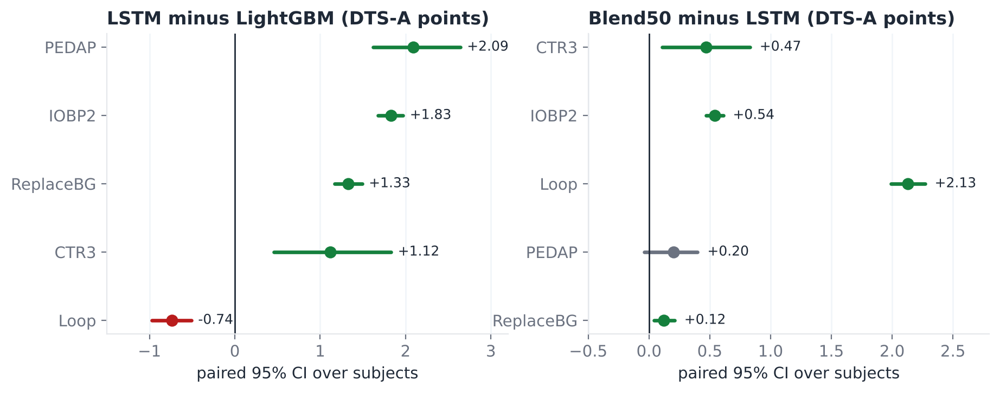
Best model per test set
Chosen after the fact by highest mean DTS-A — a reporting choice, not a step in building any submission. The same model's MARD, RMSE and MSE are shown, so each row describes one model. Download as Excel.
| Test set | Best model | DTS-A 30 | 60 | 90 | 120 | Mean DTS-A | Mean MARD | Mean RMSE | Mean MSE | Anchors |
|---|---|---|---|---|---|---|---|---|---|---|
| Public test set | live_lstmseed6 | 94.07 | 86.43 | 81.37 | 76.91 | 84.70 | 10.90 | 22.66 | 548.2 | 2,648,987 |
| CTR3 | blend50 | 84.77 | 63.21 | 51.56 | 47.25 | 61.69 | 21.05 | 38.31 | 1593.3 | 62,846 |
| IOBP2 | seedavg+gbm | 93.01 | 83.71 | 77.75 | 71.94 | 81.60 | 12.10 | 26.31 | 738.1 | 432,062 |
| Loop | seedavg+gbm | 90.73 | 77.75 | 69.18 | 63.58 | 75.31 | 14.51 | 27.54 | 808.6 | 5,180,479 |
| PEDAP | seedavg | 84.93 | 72.90 | 67.47 | 63.52 | 72.20 | 17.10 | 32.92 | 1133.3 | 230,944 |
| ReplaceBG | seedavg | 89.72 | 75.00 | 64.98 | 57.83 | 71.88 | 16.86 | 32.69 | 1167.3 | 1,059,592 |
On four of five studies the seed-averaged LSTM and its 50/50 blend with LightGBM sit within about 0.3 DTS-A of each other, so "best" per study is a label, not a settled ranking. The public-test row is the one that resembles the annual set.
How we got here — the earlier model history
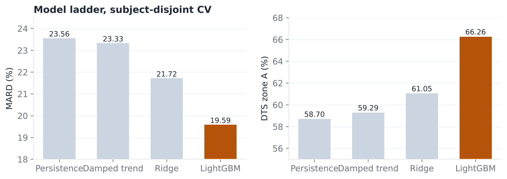
HISTORYPhase 1 (September 2026): seventeen submissions rescored on identical rows
| Model | Avg DTS-A |
|---|---|
| LightGBM what-if, 240 features (v2) | 82.07 |
| LightGBM what-if (v1) | 81.12 |
| v10 DTS-residual meta-model | 79.08 |
| v09 | 78.82 |
| v11 regime model | 78.51 |
| v12 trajectory model | 78.32 |
| v08 | 77.98 |
| v11 selector | 77.79 |
| v07 soft-gate | 76.80 |
| v06 temporal transformer (no future inputs) | 76.74 |
| v05b / v05 | 74.89 / 74.86 |
| v04 mixture-of-experts | 74.49 |
| v03 | 74.48 |
| v02 | 73.05 |
| Causal LightGBM (no future inputs) | 69.45 |
| v01 LightGBM + TCN hybrid (no future inputs) | 67.87 |
| Persistence | 60.00 |
Scored with the toolkit aggregate in use at the time; compare rows within this table only. At the time we read this as "sequence models are 5–14 points below the GBDT". That reading was wrong and is retracted: the two deep models here were never given the known-future block. Given the same inputs, the LSTM beats LightGBM on four of five held-out studies (Table above).
What the results say
RQ1 — Information moves accuracy; architecture does not
In the tabular pipeline we measured nine ideas one at a time against the same baseline. One of them — adding the insulin and carbohydrate recorded in the next two hours — was worth +4.52 DTS-A at 30 minutes (88.05 → 92.57). The other eight together were worth +0.78, and two were negative.
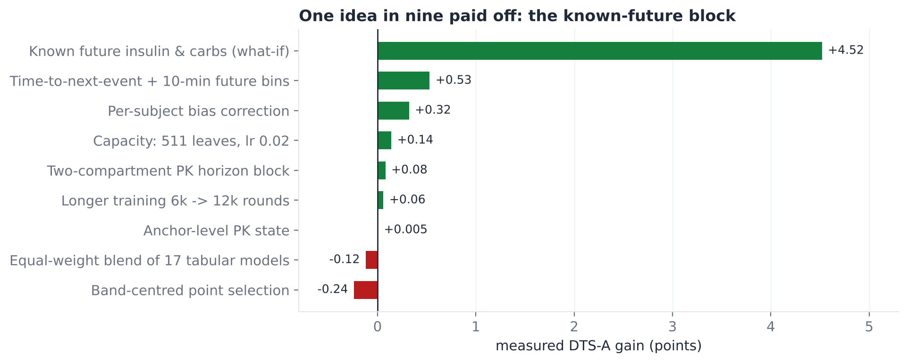
live_whatif vs live_causal).On the deep side we ran seven paired single-change screens against the plain LSTM — same anchors, folds, seed, loss and budget, one change each — on all five held-out studies. None improved it.
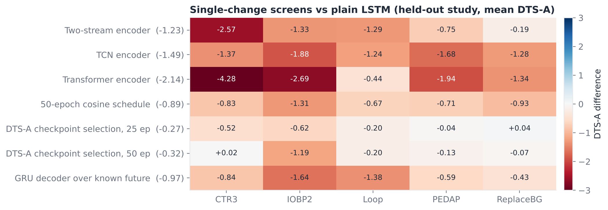
lstm_s0 on each
held-out study; the mean across studies is in brackets. The transformer is the worst row (on CTR3 it scores 56.94,
below persistence at 58.81). The GRU decoder — which reads the known-future schedule step by step instead of
flattening it, and which we predicted would help most at long horizons — loses on all five studies and loses most at
90 and 120 minutes. The 50-epoch row confounds training length with the cosine learning-rate schedule
(Ablations).RQ2 — "Unseen" is two different questions
Our two test sets disagreed. On whole held-out studies the 50/50 blend beat the pure LSTM on four of five (Figure 7). On the public test set the pure LSTM beat the blend at every horizon, every paired interval clear of zero. The leading explanation — that the public set shares patients with training and a sequence model recognises them — does not survive: split the public set by whether a patient also appears in training, and the LSTM wins on both groups, including the 151 patients it has never seen.
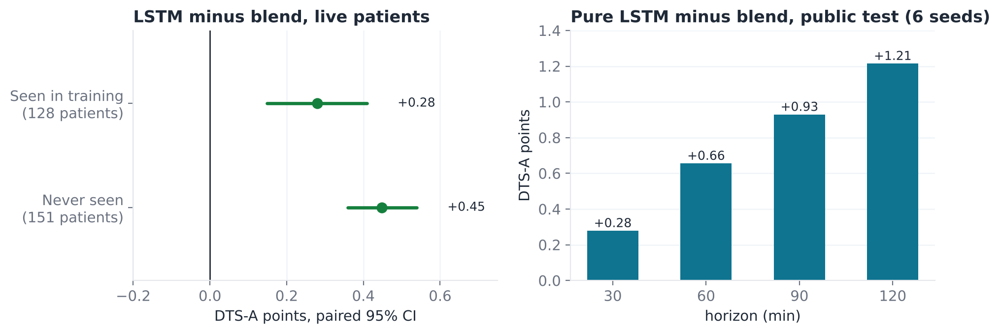
iLet Bionic Pancreas)
occurs in exactly one training study. Our pre-registered rule was written for the first kind; we report both and
say which entry each favours (Submissions).RQ3 — Offline evaluation can be trusted, and the model is calibrated
Scoring. On all five entries checked, the leaderboard's per-horizon DTS-A, MARD and RMSE equal our offline values to the board's rounding (table). A noise floor of ~1.8 points we had assumed between local and board scores was imaginary; paired subject-bootstrap intervals are the right test, and effects of a few tenths are measurable.
Calibration. An earlier table binned errors by the true glucose and showed predictions too high when truth was low and too low when truth was high; we read that as shrinkage and tried three post-hoc corrections, all of which failed. Binning by the truth produces exactly that pattern for a perfectly calibrated predictor — it is regression to the mean, and nothing applied at prediction time can repair it. The actionable question bins by what the model predicted:
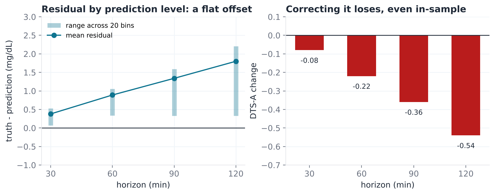
live_lstmseed6, 2,648,987 rows,
20 equal-count bins by prediction (≈ 70–288 mg/dL). Left: mean truth − prediction is +0.38 / +0.89 / +1.34 / +1.80
mg/dL by horizon, near-constant across prediction levels (sd across bins 0.13–0.36). Right: subtracting it bin by bin
and scoring on the same rows — a fit that cannot lose by construction — still lowers DTS-A at every horizon, while
RMSE improves slightly. Fitted on eight studies and applied to the ninth, the correction costs −0.360 DTS-A on
average and loses on 9 of 9.Where the remaining error lives
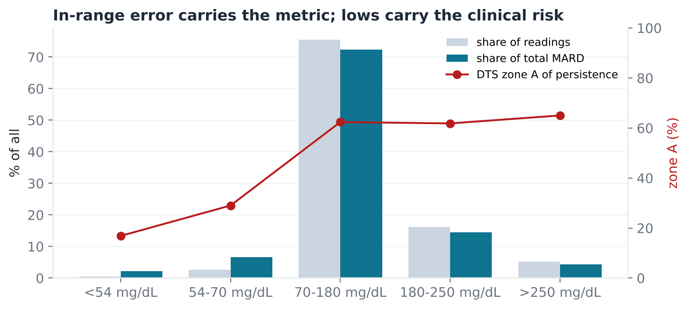
| Horizon | Worst bin | Mean pred there | DTS-A | Best bin DTS-A |
|---|---|---|---|---|
| 30 min | lowest | ≈ 70 | 86.66 | 97.65 (≈ 288) |
| 120 min | middle | ≈ 161 | 74.01 | 82.11 (≈ 268) |
At 30 minutes the difficulty is hypoglycaemia, where the zone is narrow in absolute terms. At 120 minutes the extremes are the easy cases: a patient at 160 mg/dL two hours out can go either way, and which way depends on insulin and food timing over the next two hours. A hypoglycaemia-targeted loss cannot pay: below 70 mg/dL holds 2.12 of a 26.88-point zone-A deficit.
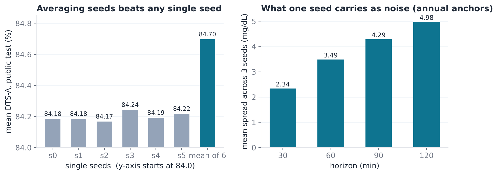
Everything we tried, with the number it got
A negative result with its number is worth reporting: it closes a direction for the next person. Each row below was measured, most with a paired interval, and none was selected by looking at evaluation targets.
| Direction | What was measured | Result | Verdict |
|---|---|---|---|
Two-stream encoder (dual) | vs lstm_s0, 5 held-out studies | −1.23 | loses all five |
| TCN encoder | vs lstm_s0, 5 held-out studies | −1.49 | loses all five |
| Transformer encoder | vs lstm_s0, 5 held-out studies | −2.14 | loses all five; below persistence on CTR3 |
| GRU decoder for the known-future block | vs lstm_s0, 5 held-out studies | −0.97 | loses all five, most at 90–120 min |
| 50-epoch schedule | vs lstm_s0 | −0.89 | loses all five; confounded with the LR schedule |
| Checkpoint on stop-split DTS-A, 25 epochs | vs lstm_s0 | −0.27 | DTS-A is a noisier criterion than L1 |
| Checkpoint on stop-split DTS-A, 50 epochs | vs lstm_e50 (same schedule) | +0.58 | wins all five, but still −0.32 vs lstm_s0 |
| Horizon-dependent blend weights | leave-one-fold-out | +0.016 | positive in 10 of 20 cells; not shippable |
| Multi-model ensembles (11 unweighted candidates) | vs incumbent, on IOBP2 | +0.04 | best candidate; TCN and transformer add nothing |
| Post-hoc calibration by prediction bin | leave-one-study-out | −0.36 | negative on 9 of 9 studies |
| Global prediction shift | per held-out study | +0.37 pooled | negative in 3 of 5; a Loop-weighting artefact |
| DTS band-centred point selection | LightGBM ledger | −0.24 | closed |
| Per-source specialised models | vs global model on identical rows | −0.05 / −0.02 | Loop / ReplaceBG: the global model already extracts what is there |
| Monotone-constrained model | vs LSTM on IOBP2 | −13.39 | safety property bought with accuracy |
| Realised-error / online-adaptation features | LightGBM | 0.00 | algebraically redundant with CGM lags |
| Hypoglycaemia-targeted loss | ceiling analysis | ≤ 2.12 | of a 26.88-point deficit; ceiling too low to pay |
| Wearable features (heart rate, steps) | coverage | 1.5% | of anchors; no large study has them |
Units are DTS-A points on the mean of four horizons unless stated. Deep-model screens are single-seed paired comparisons on the five held-out studies (Figure 10).
Two mechanisms worth stating precisely
The 50-epoch run did not train for 50 epochs
Every run early-stops at epoch 14–22 under patience 5, so raising the budget to 50 never bought more training.
What it changed was the learning-rate schedule: the cosine annealing is constructed over the epoch budget, so it
decays more slowly. lstm_e50 therefore mixes length with schedule. The clean test is
lstm_dz50 vs lstm_e50 — same schedule, only the checkpoint criterion differs — and it
gains on all five studies (+0.85, +0.12, +0.46, +0.59, +0.87; mean +0.58), recovering about two-thirds of what the
longer schedule lost.
Ensembles gain by re-weighting, not diversity
Pairwise correlation of prediction errors is 0.857–0.922 across our six trained families, and about 0.92 within the LSTM family. The most decorrelated partner is LightGBM — already in the blend. Adding a third member helps in proportion to how little it costs, which is what shifting weight toward the LSTM would do. The public test set agrees from the other side: weight 1.0 on the LSTM beats 0.5 at every horizon.
Claims we made and retracted
RETRACTED"Ensembling is closed: −0.12"
RETRACTED"Deep sequence models are 5–14 points below the GBDT"
RETRACTED"The model shrinks toward the mean"
RETRACTED"Longer training is the cheapest improvement"
lstm_e50 loses on all five studies (−0.89). See the mechanism above.RETRACTED"The annual answers are computable from the public file"
isfinite, and the holdout's −1.0 sentinels are finite,
so every blanked value counted as present. The competition is properly held out; the scoring guard that refused to
report a number was right even though the first two explanations of why were wrong.Bugs that produced confident, wrong numbers
Row alignment
The tabular and deep writers order rows differently. Blending them by position averages each row with an unrelated one and still scores plausibly: on a fixture a correctly aligned model scored 79.2 and the same model misaligned 27.3. Values cannot key the join — CGM is whole mg/dL and repeats hundreds of times per subject. Fix: realign on (subject, position within subject), then prove it by checking the targets agree row by row.
Meta-data in the wrong order
Diagnostic scripts read per-row metadata assuming template order; only 14.2% of rows lined up. Two rounds of coherent, wrong conclusions followed — including a fabricated 27-point spread between studies. It was caught because volatility failed to grow with horizon, which is physically impossible. Fix: reindex and abort below 99.9% target agreement.
A script that ate its own output
The seed averager's file pattern matched yesterday's averaged file and averaged four "seeds". The mean survived by arithmetic luck (to 0.000000), but the reported seed spread was wrong (2.02–4.31 vs the true 2.34–4.98 mg/dL), because an average varies less than a seed.
A default path that cost seven hours, twice
The annual writer defaulted its template to a path above the project root. Two array jobs trained for seven hours and died on the final write. Every job that writes a submission now passes the template explicitly and checks it exists before training starts.
What we submitted, and why
Team: withheld for review. Submissions went to the live leaderboard (public test set, instant feedback) and to the annual competition (held-out set, scores released only after the competition closes). Every annual entry was mirrored on the live board with the identical recipe, so each has a scorable twin.
Live leaderboard entries
| Entry | Recipe | 30 | 60 | 90 | 120 | Mean DTS-A | Mean MARD | Board |
|---|---|---|---|---|---|---|---|---|
| live_lstmseed6 | Mean of 6 LSTM seeds | 94.07 | 86.43 | 81.37 | 76.91 | 84.70 | 10.90 | ✓ |
| live_blendseed6 | 0.5 × 6-seed LSTM + 0.5 × LightGBM | 93.79 | 85.78 | 80.44 | 75.69 | 83.93 | 11.32 | ✓ |
| live_blendseed | 0.5 × 3-seed LSTM + 0.5 × LightGBM | 93.78 | 85.74 | 80.38 | 75.64 | 83.88 | 11.34 | ✓ |
| live_lstmseed | Mean of 3 LSTM seeds | 94.03 | 86.31 | 81.22 | 76.77 | 84.58 | 10.95 | ✓ |
| live_blend50 | 0.5 × LSTM seed 0 + 0.5 × LightGBM | 93.73 | 85.64 | 80.27 | 75.53 | 83.79 | 11.38 | |
| live_whatif | LightGBM what-if (240 features) | 92.57 | 83.29 | 77.16 | 71.48 | 81.13 | 12.60 | ✓ |
| live_causal | LightGBM, past only | 88.05 | 71.49 | 61.83 | 56.45 | 69.46 | 17.45 | |
| live_lstm | LSTM seed 0 | 93.82 | 85.92 | 80.76 | 76.24 | 84.18 | 11.14 |
DTS-A by horizon and four-horizon means from our offline scoring, which matches the board to its rounding (Results). ✓ marks entries whose per-horizon scores we read back from the board.
The annual cohort
The annual file replaces source_file with a single anonymous label, so the study is hidden.
The data is not:
| Evidence | Finding |
|---|---|
insulin_delivery_algorithm | iLet Bionic Pancreas — present in IOBP2 and in no other training study |
| Carbohydrate channel | 0 entries in 2.6 M rows (IOBP2 also 0; the iLet does not require carbohydrate counting) |
insulin_delivery_modality / cgm_device | automated insulin delivery / Dexcom G6 |
| Subject overlap with training | none — 0 of 92 subject ids; patient-disjoint |
| Scored anchors | 2,228, 28 h to 60 days apart, 100% on the five-minute grid, ≥ 24 h of history for 98.7% |
| CGM standard deviation | 71.3 mg/dL vs 59.7 in IOBP2 — second-highest of all cohorts |
| Channel null-rate fingerprint | closest to IOBP2 (14.64 pp) but poorly separated from Flair (17.32) and DCLP5 (18.07) — this test alone does not identify the cohort |
The public holdout blanks the future CGM with −1.0, not null: exactly 48 rows (four
hours) after each anchor, CGM channel only — 106,922 = 2,228 × 48 − 22. History is clean (0.0% sentinels in the 288-row
window), insulin and carbohydrate carry none, and features never read future CGM.
Annual entries
| Date | File | Recipe | Status |
|---|---|---|---|
| 22 Sep | annual_whatif_v2 | LightGBM what-if, 3 seeds, no calibration | Marked for final evaluation — the most different model |
| 23 Sep | annual_blend50 | 0.5 × single-seed LSTM + 0.5 × LightGBM | superseded — a strictly worse duplicate of the seed-averaged blend |
| 4 Oct | annual_blendseed | 0.5 × 3-seed LSTM + 0.5 × LightGBM | submitted; selected by the pre-registered IOBP2 rule |
| 5 Oct | annual_lstmseed | 3-seed LSTM | submitted |
| 5 Oct | annual_lstmseed6 | 6-seed LSTM | Marked for final evaluation — twin of the best live entry |
| 5 Oct | annual_blendseed6 | 0.5 × 6-seed LSTM + 0.5 × LightGBM | Marked for final evaluation — the pre-registered recipe, six seeds |
The three marked entries span the whole disagreement in our evidence: the held-out-study folds favour the blend, the regime analysis and the public test set favour the pure LSTM, and LightGBM wins only if the annual cohort behaves like Loop. Seed averaging is not a re-selection — same architecture, data and blend weight, only the random initialisation differs — so moving from three seeds to six changed nothing that could leak. Only the blend recipe was chosen by the pre-registered rule; the other two are hedges chosen on stated reasoning, and we do not present them as the rule's output.
Predicted means on the annual anchors by horizon: LightGBM 155.65 / 152.68 / 150.62 / 147.76 mg/dL; three-seed LSTM 156.59 / 156.14 / 156.62 / 156.84 — nearly flat, against an observed cohort mean of 155.2 at the anchor. Every file passed the format validator (row count, keys, order, Arrow storage type).
Raw patient record atlas
Aggregate profiling says what the corpus contains; it cannot say whether any one record is coherent. The atlas draws the raw record — no imputation, no unit conversion, no derived labels — for three deterministically chosen patients from every level of study, CGM sensor and insulin pump, in train and test separately: 84 one-day figures, 2 two-day figures and 43 pump data profiles, 236 patient panels in all.
Selection: subjects with ≥ 864 CGM readings, ordered by MD5(seed | study | id) with seed 20260101, first three taken; the day drawn is the best-covered one (≥ 180 of 288 readings), preferring days with bolus and carbohydrate records. Hover any point for its timestamp, column and value; click a legend entry to hide a series; drag to zoom.
Reading a panel
Glucose on the left axis with dashed lines at 55, 70, 180 and 250 mg/dL (red: Level 2 thresholds; black: target range). Basal records as amber triangles, boluses as markers on the right axis, carbohydrate along the top. Sensor dropouts are breaks, not lines drawn across them.
Raw units, stated
Each header carries the patient's study, sensor, pump, therapy mode and
algorithm, and the raw demographic fields as stored — height in feet and weight in pounds, not silently converted.
insulin is shown only where basal and bolus are absent (CTR3, BrisT1D).
Records are de-identified MetaboNet data. Do not attempt to re-identify any individual. Reuse of the underlying data is governed by the MetaboNet terms of use.
How to reproduce the numbers
Environment
- Python
- 3.11 (dedicated conda environment)
- Core
- pandas, numpy, pyarrow, duckdb, LightGBM, PyTorch
- Figures
- plotly ≥ 5.18 (atlas), matplotlib (this page)
- Compute
- university SLURM cluster; CPU nodes for LightGBM, GPU nodes for the LSTM
- Seeds
- validation split 1234; atlas 20260101; bootstrap 7; model seeds 0–5
Data
MetaboNet train / test parquet from the challenge, and the organisers' submission toolkit for the template, targets and validator. Always call the environment's interpreter by absolute path, and always pass the template explicitly.
Pipeline
# 0 confirm the scored row set (expect: MATCH)
python scripts/00_verify_template.py --test test.parquet \
--template template.parquet --targets targets.parquet
# 1 features (train and live, causal and what-if)
python scripts/01_build_dataset.py --split train --variant whatif
# 2 LightGBM, one booster per horizon, 3 seeds
python scripts/02_train.py --objective l1 --seeds 0 1 2
# 3 predict onto the template, write 7 columns
python scripts/03_predict.py --split live --template template.parquet
# 4 score per horizon, unclipped
python scripts/52_live_per_horizon.py
# held-out-study screens and summaries
python scripts/37_xcohort_table.py
python scripts/51_per_horizon_folds.py
python scripts/55_results_report.py --out results/metabonet_resultsRepository of this page
index.html this page (single file, no build step)
static/css/style.css styles; colour tokens at the top
static/js/site-config.js authors, links, BibTeX — edit to de-anonymise
static/js/main.js tables, toggles, arena, atlas explorer
static/data/results.js generated from the results CSV
static/images/*.png figures, generated by tools/make_figures.py
static/tables/*.csv|.xlsx every table behind every figure
static/atlas/ the interactive patient atlas (plotly)
tools/build_data.py CSV → static/data/results.js
tools/make_figures.py CSV + measured constants → static/imagesAnalysis scripts
INDEXNotebooks and numbered scripts behind each result
| Script | What it does |
|---|---|
001 – 004 notebooks | data audit; preprocessing and cleaning; raw patient atlas |
005, 006 notebooks | forecast submission (model ladder, freeze stamp, guarded read-out); conditional forecast |
00 – 04 | verify template · build features · train · predict · evaluate |
08 | conform a file's Arrow storage types to the template |
10 – 18 | band shift · subject headroom · blend analysis · error map · source audit · skill by source · row spacing · meta alignment check · per-source model |
19 – 30 | tabular leave-one-study-out · annual probe, readiness, columns, cohort match, guarded score · target diagnosis · sentinel audit · frozen splits |
36 – 38 | frozen multi-cohort splits · cross-cohort table with paired bootstrap · fixed-weight blend |
40 – 46 | annual deep entry · live-set seen / unseen split · gap audit · horizon weights · seed averaging |
49 – 55 | DTS-A checkpoint selection · ensemble scan · per-horizon folds · live per-horizon scoring · known-future GRU decoder · calibration check · results report |
Main contributions
- An audit of the MetaboNet challenge data. Eight findings with their measurements — a subject identifier that is not a subject key, unit errors, pump-dependent food data, insulin recorded as a total — and the reconstructed rule that selects the scored set, reproduced to the row.
- A measured answer to "what moves accuracy". Known-future insulin and carbohydrate is worth +4.52 DTS-A at 30 minutes and +15.0 at 120 minutes; seven paired architecture, schedule and decoder screens over five held-out studies improve nothing.
- Two regimes of "unseen", separated. A fixed blend wins at a new study; the pure sequence model wins at new patients from known studies, at every horizon and for patients never seen in training.
- Evidence that the objective is right and the evaluation is trustworthy. Offline scoring equals the leaderboard; L1 on the log ratio is calibrated on its own predictions, and post-hoc correction loses out of study on 9 of 9 cohorts, with the mean–median mechanism identified.
- A complete public record. Every result table, every negative result with its number, every submission, and an interactive atlas of raw patient records across every study, sensor and pump.
What this work does not show
Limitations
- Known-future inputs are delivered doses, not plans. The conditional model answers "given this treatment, where will glucose go". It is permitted by the challenge and clinically meaningful for a dosing decision, but it is not a forecast of what a patient will choose to do. Past-only results are reported beside it.
- Annual scores are not yet available. Our evidence about the annual entries is indirect: identical recipes on the public set, and whole-study hold-outs.
- Absolute held-out-study numbers are not comparable across studies, because each fold removes a different share of the training data; only within-fold differences carry meaning.
- Screens are single-seed. Six-seed results exist only for the final recipe; seed-to-seed spread (0.07 DTS-A on the public set) is far below the screen effects, but it is not zero.
- The sequence model sees no static context — no device, therapy mode or demographics — while LightGBM does, and model width was not varied. Both are open levers we did not test.
- Information-limited cohorts. In manual-dosing studies, unannounced meals and hand-judged doses are not recorded; a per-source model matched the global one exactly, so the ceiling there is data, not modelling.
- Time Gain and other dense-trajectory metrics cannot be computed: anchors are 15–30 minutes apart, coarser than the lag they would measure.
Ethics statement
All data come from the de-identified MetaboNet release distributed for the challenge (Wolff et al., 2026). No new data were collected and no attempt was made to re-identify any individual. Patient-level figures render de-identified records exactly as stored. Models are research artefacts: they forecast glucose for benchmarking and are not validated for dosing decisions or any clinical use. No quantity in this work was tuned on evaluation targets.
Acknowledgements
Acknowledgements are withheld for anonymous review.
We thank the MetaboNet maintainers and the organisers of the MetaboNet Glucose Prediction Challenge for the data, the submission toolkit and the leaderboard.
BibTeX
Data
@article{Wolff2026MetaboNet,
title = {MetaboNet: The Largest Publicly Available Consolidated Data Set for Type 1 Diabetes Management},
author = {Wolff, Miriam Kopperstad and Calhoun, Peter and Aiello, Eleonora Maria and Qin, Yao and Royston, Sam Fox},
journal = {Journal of Diabetes Science and Technology},
year = {2026},
doi = {10.1177/19322968261441637}
}References
- Wolff MK, Calhoun P, Aiello EM, Qin Y, Royston SF. MetaboNet: the largest publicly available consolidated data set for type 1 diabetes management. J Diabetes Sci Technol. 2026. doi:10.1177/19322968261441637.
- Battelino T, et al. Clinical targets for continuous glucose monitoring data interpretation: recommendations from the International Consensus on Time in Range. Diabetes Care. 2019;42(8):1593–1603.
- Klonoff DC, et al. The Diabetes Technology Society error grid and trend accuracy matrix for glucose monitors. J Diabetes Sci Technol. 2024.
- MetaboNet Glucose Prediction Challenge submission toolkit and leaderboard (Replica Health, 2026).